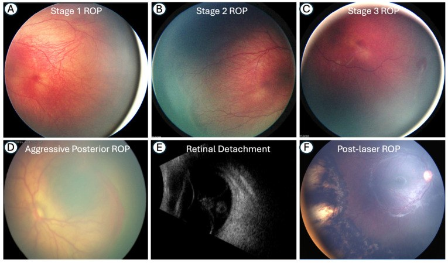
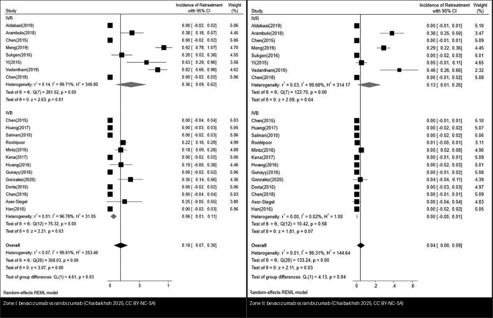
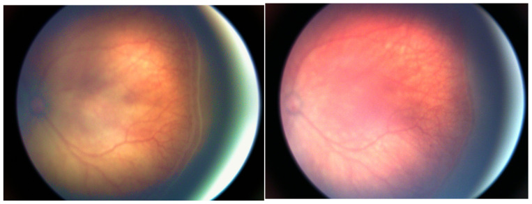
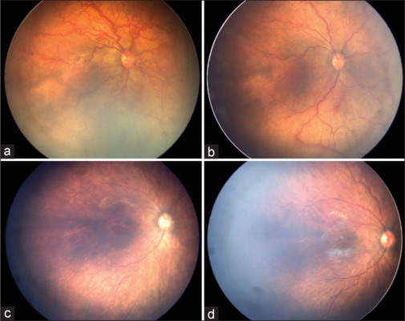
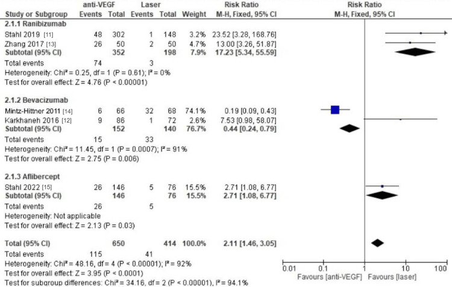
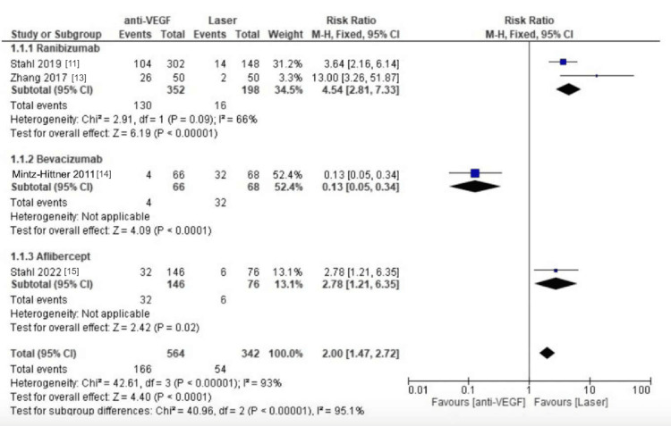
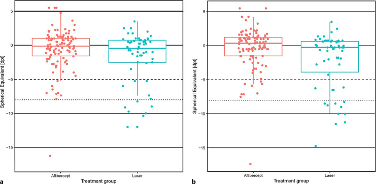
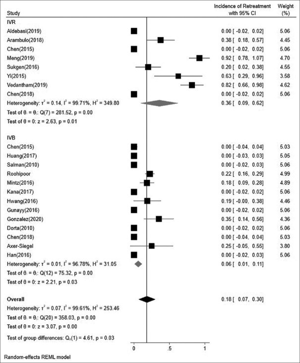

461 — Chọn thuốc & phác đồ anti-VEGF cho ROP: bevacizumab vs ranibizumab vs aflibercept, liều, khoảng tái tiêm & khi nào chuyển laser / Anti-VEGF agent choice & regimen for retinopathy of prematurity
Tags: pattern:rop pattern:tan-mach-vong-mac vung:vong-mac score:ICROP protocol:anti-VEGF-noi-nhan protocol:laser protocol:theo-doi-sau-tiem
Mức chắc chắn (certainty): tổng hợp y văn (literature synthesis) — tổng hợp từ RCT/registry/meta-analysis mở 2024–2026 (Cureus CC BY; J Curr Ophthalmol CC BY-NC-SA; J Clin Med CC BY; Neonatology CC BY-NC; Indian J Ophthalmol CC BY-NC-ND; Front Med CC BY; Ophthalmol Sci CC BY); có gắn hình thái ca nguyên văn từ bài gốc nhưng nội dung nhóm tự biên.
1. Tổng quan — vì sao anti-VEGF "hiệu quả nhanh nhưng dai dẳng" hơn laser
- Sinh bệnh học (pathophysiology): ở trẻ sinh non, mạch võng mạc chưa mọc hết ra ngoại vi → võng mạc ngoại vi thiếu oxy → tăng yếu tố tăng trưởng nội mô mạch máu (VEGF) → tân mạch tại ranh giới võng mạc có mạch/vô mạch (ranh giới Doppler) → co kéo, gờ, plus disease, rồi bong võng mạc (bài 456). Hai lựa chọn điều trị nhắm đúng cơ chế này theo hai cách khác nhau:
- Laser quang đông vùng vô mạch (photocoagulation): đốt phá võng mạc ngoại vi thiếu oxy → giảm nguồn sản xuất VEGF; hiệu quả tức thì, ít tái hoạt, nhưng phá vĩnh viễn võng mạc ngoại vi → cận thị cao, thu hẹp thị trường.
- Tiêm nội nhãn kháng VEGF (anti-VEGF): trung hòa VEGF trong dịch kính → thoái triển nhanh, bảo tồn võng mạc ngoại vi đang mọc (nhờ đó giảm cận thị cao, thị trường rộng hơn), nhưng thuốc bị đào thải dần → khi nồng độ tụt, VEGF tăng lại → tái hoạt (reactivation)/cần tái điều trị (retreatment). Đây là bản chất thuốc quyết định (không phải lỗi kỹ thuật).
- TẠI SAO chọn thuốc lại quan trọng — thời gian tác dụng (durability) khác nhau: thuốc có thời gian bán thải nội nhãn dài giữ VEGF bị khóa lâu hơn → tái hoạt muộn hơn, ít hơn. Theo thực hành mở (tổng hợp trong Kumawat Indian J Ophthalmol 2026, PMC13225330):
- Bevacizumab (BCZ) hiệu quả nhưng thời gian bán thải toàn thân dài → ức chế VEGF toàn thân kéo dài (lo ngại phát triển thần kinh–thể chất).
- Ranibizumab (RBZ) hệ thống ngắn (ít ức chế VEGF toàn thân) nhưng tái hoạt sớm và thường xuyên.
- Aflibercept (AFL) là "VEGF-trap" (gắn VEGF ái lực cao) → tác dụng nội nhãn kéo dài, được kỳ vọng giảm tái hoạt; nhưng liều cao (1 mg) lại tái điều trị nhiều hơn, trong khi liều thấp 0,4 mg (FIREFLEYE) cân bằng hơn.
- Ngưỡng định lượng cốt lõi (dùng để chọn & theo dõi):
- Liều "chuẩn" hay dùng: bevacizumab 0,625 mg ; ranibizumab 0,2 mg (RAINBOW) hoặc 0,25 mg ; aflibercept 0,4 mg (FIREFLEYE/BUTTERFLEYE) hoặc 1 mg (nghiên cứu cũ) ; conbercept 0,25 mg.
- Tỷ lệ tái điều trị (IR) gộp theo thuốc (Chaibakhsh J Curr Ophthalmol 2025, PMC12668653): tổng 19% (95% CI 15–23%); IVR 27% (19–35%) và IVA 27% (6–47%) cao nhất, IVC 16% (13–20%), IVB 11% (7–14%) thấp nhất.
- Theo vùng (zone): Zone I tái điều trị nhiều hơn hẳn Zone II. Với Zone I: IVR 36% vs IVB 6% (p = 0,03); Zone II: IVR 13% vs IVB ~0% (p = 0,03).
- Khoảng trung vị đến tái điều trị (Ortiz-Seller, trích trong Kumawat 2026): BCZ 6,72 tuần · RBZ 3,13 tuần · conbercept 2,48 tuần · AFL 1 mg 8,65 tuần — càng ngắn thì lịch theo dõi càng phải dày.
- Tái hoạt trên chuỗi ảnh thực tế: IVR 10,4% và IVC 12,6%, thời điểm trung bình ~8,9 tuần (Liu Q Front Med 2026, PMC12960177); riêng sau IVB có ca tái hoạt tới 30,3% (Gül BMC Ophthalmol 2026, PMC13536656) — không có thuốc nào "miễn nhiễm" tái hoạt.
- Biến chứng nặng: bong võng mạc (RD) sau anti-VEGF gộp 1,4% (95% CI 0,5–2,7%), 27 nghiên cứu/5.598 mắt (Liu G J Clin Med 2026, PMC13666268).
- An toàn thần kinh: dùng anti-VEGF ở trẻ rất non không làm tăng rõ rệt rối loạn phát triển thần kinh trong 6 năm đầu (71,4% vs 58,1%; OR 1,4; 95% CI 0,8–2,4; p = 0,31 so với laser/cryo — Ben Ghezala Ophthalmol Sci 2026, PMC13654026) — nhưng bằng chứng còn giới hạn, cần theo dõi dài hạn.
2. Mẫu hình + chẩn đoán phân biệt theo vùng/cơ chế (Gamut)
- Ai được tiêm anti-VEGF (theo ICROP3 2021): ROP type 1 — Zone I bất kỳ giai đoạn nào kèm plus; Zone I giai đoạn 3 không plus; Zone II giai đoạn 2 hoặc 3 kèm plus; và AP-ROP (aggressive posterior ROP). Anti-VEGF nay là chuẩn cho Zone I, Zone II sau (posterior) và AP-ROP; laser vẫn rất hiệu quả cho Zone II–III ngoại vi.
- Mẫu hình điều trị (pattern) — theo vùng (zone):
- Zone I / posterior Zone II / AP-ROP: ưu tiên anti-VEGF (bảo tồn mạc ngoại vi chưa mọc hết; laser ở vùng này dễ phá hoại và gây co kéo).
- Zone II ngoại vi / Zone III: laser thường đủ và ít tái hoạt.
- Bệnh tái hoạt sau anti-VEGF: thường gieo lại ở ranh giới mạch máu–vô mạch, có thể nhanh và kèm kéo võng mạc → tái tiêm hoặc laser bổ trợ (adjunctive laser).
- Gamut phân biệt "thất bại/tái hoạt" so với các nguyên nhân khác:
| Mẫu hình | Vị trí (zone) | Gamut chính | Phân biệt nhanh |
|---|---|---|---|
| Tân mạch tiến triển lại | Ranh giới mạch/vô mạch | Tái hoạt ROP | So chuỗi ảnh thấy tiến triển (không phải sẹo cũ) |
| Gờ/rách mới, bong co kéo | Ngoại vi | Biến chứng của tái hoạt | B-scan/réclinoscopy; đe dọa hoàng điểm = cấp cứu |
| Đục thủy tinh thể non | Thể thủy tinh | Biến chứng tiêm (hiếm) | Đục tiến triển sau tiêm |
| Phù/đục giác mạc do glaucoma | Góc tiền phòng | Glaucoma tân mạch góc đóng | IOP cao, giác mạc mờ |

(A–C) ROP giai đoạn 1–3 (gờ → gờ có tân mạch → tân mạch ngoài võng mạc + plus); (D) A-ROP — tân mạch phẳng, không gờ; (E) bong võng mạc dạng phễu trên siêu âm; (F) mắt sau laser. Nguồn: Coughlin E et al., Medicina 2026, PMC13208618 Fig. 2, CC BY 4.0.3. Bảng so sánh phân biệt (ma trận đối chiếu) — chọn thuốc & phương thức
| Thực thể (entity) | Liều & đặc điểm | Chốt vào (rule-in) | Chốt loại (rule-out) | Gợi ý xác nhận |
|---|---|---|---|---|
| Bevacizumab (IVB) | 0,625 mg; bán thải toàn thân dài | Tái điều trị thấp nhất (11%); Zone I IR 6% | Muốn ít phơi nhiễm hệ thống ở trẻ cực non → nghĩ RBZ/AFL liều thấp | Cân nhắc vì ức chế VEGF toàn thân kéo dài |
| Ranibizumab (IVR) | 0,2 mg (RAINBOW) / 0,25 mg; bán thải hệ thống ngắn | Tái hoạt cao nhất (27%), sớm (~3,1 tuần); Zone I IR 36% | Zone II ngoại vi đơn thuần → laser thường đủ | Theo dõi dày hơn, sẵn sàng tái tiêm |
| Aflibercept (IVA) | 0,4 mg (FIREFLEYE) hoặc 1 mg; VEGF-trap | Tác dụng dai, tái hoạt muộn hơn RBZ; liều 1 mg tái điều trị nhiều | Lo ngại tái hoạt sớm → AFL thay thế hợp lý | FIREFLEYE/BUTTERFLEYE: kiểm soát ổn định tới 3 năm |
| Conbercept (IVC) | 0,25 mg | IR 16%, khoảng tái điều trị ~2,5 tuần (ngắn) | — | So với IVR: tái hoạt tương đương (10,4% vs 12,6%) |
| Laser quang đông | Toàn bộ vùng vô mạch | Tái hoạt/tái điều trị THẤP nhất (gộp RR ~2 lần so anti-VEGF) | Cần bảo tồn mạc ngoại vi (Zone I) → hạn chế | Nhược điểm: cận thị cao, thị trường hẹp |
Đọc bảng: không có "thuốc tốt nhất" tuyệt đối — chọn theo vùng bệnh + cân nhắc an toàn toàn thân + khả năng theo dõi. Xu hướng: Zone I/A-ROP → anti-VEGF (ưu tiên thuốc dai, liều thấp), Zone II–III → laser (nếu chưa tiêm), tái hoạt → tái tiêm ± laser bổ trợ.

Trái: Zone I — ranibizumab tái điều trị cao hơn hẳn bevacizumab. Phải: Zone II — bevacizumab gần như không tái điều trị, ranibizumab vẫn ~13%. Nguồn: Chaibakhsh S et al., J Curr Ophthalmol 2025, PMC12668653 Fig. 6–7, CC BY-NC-SA 4.0; ảnh ghép letterbox, giữ nguyên bản.4. Protocol & phác đồ (khi nào tiêm, liều, khoảng theo dõi, khi nào laser)
- Chỉ định (ICROP3 2021 — điều trị type 1 ROP):
- Zone I: bất kỳ giai đoạn kèm plus; hoặc giai đoạn 3 không plus.
- Zone II: giai đoạn 2 hoặc 3 kèm plus.
- AP-ROP (bất kể vùng): tân mạch phẳng + plus, tiến triển nhanh → cấp cứu.
- Chuẩn bị & kỹ thuật tiêm: gây tê tại chỗ ± an thần; sát khuẩn povidone-iodine; dùng kim/khóa 30G; tiêm cách rìa ~1,0–1,5 mm (tránh thủy tinh thể); liều theo thuốc ở mục 3.
- Thuốc & liều (thực hành phổ biến): xem mục 3. Xu hướng hiện nay: dùng liều thấp cho aflibercept (0,4 mg) và ranibizumab (0,2 mg) để giảm phơi nhiễm.
- Theo dõi sau tiêm (safety-net): khám/soi đáy mắt 1–2 tuần rồi mỗi 1–2 tuần tùy vùng, tới khi mạch máu hoàn tất hoặc ≥ 65 tuần tuổi sau kinh (PMA) (bài 458); cảnh giác tái hoạt muộn.
- Khi nào chuyển/phối hợp laser: tái hoạt/tiến triển vùng vô mạch còn lại → laser bổ trợ; với Zone II–III ngoại vi có thể laser ngay là đủ; AFL 1 mg/RBZ có tái điều trị cao → cân nhắc laser bổ trợ sớm.
- Hệ phân độ: ICROP3 (2021) — vùng I–III, giai đoạn 1–5, plus disease/pre-plus, A-ROP; type 1/type 2 theo chỉ định điều trị.
flowchart TD
A[ROP type 1 theo ICROP3: Zone I +plus / Zone I gđ3 / Zone II gđ2-3 +plus / A-ROP] --> B{Vùng bệnh?}
B -->|Zone I / posterior Zone II / A-ROP| C[Anti-VEGF: chon thuoc dai + lieu thap]
C --> C1{Chon thuoc}
C1 -->|It phoi nhiem toan than?| D[Ranibizumab 0,2 mg hoac Aflibercept 0,4 mg]
C1 -->|It tai dieu tri nhat?| E[Bevacizumab 0,625 mg - luu y uc che VEGF toan than keo dai]
B -->|Zone II ngoai vi / Zone III| F[Laser quang dong vung vo mach]
C --> G[Theo doi 1-2 tuan/lan: t rang rai hoac tai hoat?]
F --> G
G -->|Tai hoat / tien trien| H[Tai tiem hoac laser bo tro]
G -->|On dinh| I[Tiep tuc theo doi toi khip mach hoan tat / >= 65 tuan PMA]
H --> G
5. Biến thể bình thường và cạm bẫy
- "Thoái triển" ≠ "khỏi": sau tiêm, gờ/tân mạch giảm nhanh nhưng vùng vô mạch ngoại vi vẫn còn (persistent avascular retina — PAR) → vẫn phải theo dõi tới khi mạch hoàn tất; đừng ngừng theo dõi khi mắt "trông sạch".
- Tái hoạt muộn sau anti-VEGF (đặc biệt RBZ/AFL): có thể nhanh (RBZ ~3 tuần) hoặc muộn (AFL/BCZ) → lịch theo dõi phải theo thuốc, không dùng một mốc chung cho mọi thuốc.
- Sàng lọc không được "quên" vì đã tiêm: tái hoạt có thể nặng, kèm bong võng mạc (gộp 1,4%) — giáo dục cha mẹ + hẹn tái khám chặt.
- A-ROP ≠ ROP thường: A-ROP không có gờ rõ, tân mạch phẳng + plus, tiến triển rất nhanh → không chờ, tiêm ngay.
- Cảnh giác toàn thân: bevacizumab ức chế VEGF toàn thân kéo dài — cần theo dõi tăng trưởng/phát triển; dù dữ liệu 6 năm đầu chưa cho thấy tăng rối loạn phát triển thần kinh (OR 1,4; p = 0,31), bằng chứng còn giới hạn.
- Cạm bẫy "một mũi là xong": tái hoạt thường gặp (IR gộp 19%) — hãy coi mũi tiêm là mở đầu một chuỗi theo dõi, có kế hoạch cho mũi 2.
6. Tự lượng giá — Blind Quiz
Ca 1 — Trẻ rất non, mắt phải trước và 7 ngày sau tiêm aflibercept nội nhãn:

- Gợi ý lâm sàng: sinh cực non cân nặng rất thấp, ROP type 1/A-ROP, tuổi sau kinh muộn.
- Hỏi: sau tiêm 7 ngày thấy thay đổi gì? Vì sao mắt vẫn phải theo dõi tiếp?
Bấm để hiện đáp án (findings + chẩn đoán)
- Dấu hiệu (findings): trước tiêm — tân mạch + plus; sau 7 ngày — plus giảm rõ, tân mạch thoái triển.
- Chẩn đoán (diagnosis): ROP được điều trị bằng aflibercept — hiệu quả nhanh nhờ trung hòa VEGF. Nhưng vùng vô mạch ngoại vi vẫn còn → phải theo dõi tiếp vì nguy cơ tái hoạt khi thuốc thải hết (bài 458).
- Nguồn ảnh: Szwajkowska M et al., J Clin Med 2026, PMC12985830 Fig. 2, CC BY 4.0.
Ca 2 — Trẻ 29 tuần, 1.100 g, Zone I; đáy mắt trước tiêm và tiến triển mạch máu về sau:

- Hỏi: panel (a) mô tả gì? Panel (b) khác gì? Vì sao đây là lý do chọn anti-VEGF thay vì laser?
Bấm để hiện đáp án (findings + chẩn đoán)
- Dấu hiệu (findings): (a) aggressive ROP Zone I, hoàng điểm chỉ mới mạch hóa một phần; (b) 1 tuần sau tiêm aflibercept — plus giảm đáng kể; các mốc (c)(d) cho thấy mạch máu mọc dần vào Zone II (10 tuần, 16 tuần).
- Chẩn đoán (diagnosis): AP-ROP Zone I — chỉ định anti-VEGF. Lý do: bảo tồn võng mạc ngoại vi đang mọc (laser ở Zone I dễ phá hủy và gây cận thị cao).
- Nguồn ảnh: Kumawat D et al., Indian J Ophthalmol 2026, PMC13225330 Fig. 1, CC BY-NC-ND 4.0 (giữ nguyên bản, không ghép).
Ca 3 — Hai forest plot: tái điều trị và tái hoạt laser vs anti-VEGF:


- Hỏi: bên nào tái điều trị/tái hoạt ít hơn? Điều đó có nghĩa "nên chọn laser cho mọi ca" không?
Bấm để hiện đáp án (findings + chẩn đoán)
- Dấu hiệu (findings): laser có tỷ lệ tái điều trị và tái hoạt THẤP hơn anti-VEGF — gộp RR ~2,1 (tái điều trị) và RR ~2,0 (tái hoạt).
- Chẩn đoán/kết luận: KHÔNG có nghĩa chọn laser cho mọi ca — laser tái hoạt ít nhưng phá mạc ngoại vi (cận thị cao, thị trường hẹp); với Zone I/A-ROP, anti-VEGF bảo tồn mạc ngoại vi nên vẫn được ưu tiên, chỉ cần theo dõi sát tái hoạt.
- Nguồn ảnh: Alghamdi A et al., Cureus 2025, PMC12497353 Fig. 3–4, CC BY 4.0.
Ca 4 — So sánh khúc xạ 3 năm: aflibercept vs laser:

- Hỏi: nhóm nào cận thị cao ít hơn? Đánh đổi (trade-off) chính khi chọn anti-VEGF?
Bấm để hiện đáp án (findings + chẩn đoán)
- Dấu hiệu (findings): aflibercept có cận thị cao ít hơn laser (8,9% vs 24,1%); thị lực hai mắt ≥ 20/40: 66,7% (AFL) vs 47,8% (laser).
- Kết luận: chọn anti-VEGF để giảm cận thị cao/thị trường rộng nhưng phải chấp nhận theo dõi tái hoạt lâu; không tái hoạt sau 50 tuần tuổi trong FIREFLEYE next.
- Nguồn ảnh: Stahl A et al., Neonatology 2026, PMC12885499 Fig. 2, CC BY-NC 4.0.
Ca 5 — Trên chuỗi theo dõi, mắt đã tiêm có tái hoạt: phân biệt "sẹo cũ" vs "tái hoạt thật":

- Hỏi: vì sao ranibizumab cần tái điều trị nhiều hơn ở Zone I? Khi nào thì phải tái tiêm/laser bổ trợ?
Bấm để hiện đáp án (findings + chẩn đoán)
- Dấu hiệu (findings): Zone I — IVR tái điều trị 0,36 vs IVB 0,06 (p = 0,03); khoảng tái điều trị trung bình RBZ ~3,1 tuần so với BCZ ~6,7 tuần.
- Chẩn đoán/hướng xử trí: ranibizumab tác dụng ngắn hơn → tái hoạt sớm hơn; khi thấy tiến triển so ảnh nền (tân mạch/gờ mới, plus quay lại) → tái tiêm hoặc laser bổ trợ. Luôn so chuỗi ảnh, không kết luận theo một ảnh đơn lẻ.
- Nguồn ảnh: Chaibakhsh S et al., J Curr Ophthalmol 2025, PMC12668653 Fig. 6, CC BY-NC-SA 4.0.
Bài liên quan chéo
- 400 – Tổng quan Mắt & thị giác
- 456 – Bệnh võng mạc trẻ sinh non (ROP): ICROP zone–stage–plus & AP-ROP (phân độ, chỉ định)
- 458 – Di chứng & theo dõi dài hạn sau ROP: tái hoạt sau anti-VEGF, cận thị/lác/nhược thị (theo dõi)
- 457 – Bệnh "giả ROP" ở trẻ đủ tháng: FEVR, Norrie, IP, Coats (phân biệt "giả ROP")
- 460 – Can thiệp mắt (kỹ thuật tiêm nội nhãn)
- 450 – Mắt nhi
Ảnh
- Tên file:
461_antiVEGF_<nội dung>_<PMCID>-Fig<n>-<License>.jpg; nguồn + giấy phép từng ảnh trongimages/CREDITS.md. - Ảnh CC BY-NC-ND (PMC13225330) giữ nguyên bản — không ghép/crop. Ảnh ghép chỉ dùng nguồn cho phép tạo tác phẩm phái sinh (CC BY / CC BY-NC-SA — giữ nguyên bản, ghi nguồn).
Không dùng để chẩn đoán độc lập khi chưa có người hướng dẫn.